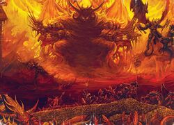

Кхорн
Кхорн, также известен как Кровавый бог, Покровитель Ярости и Собиратель Черепов. Он является самым могущественным и самым старым из Тёмной Четверки.
Кровавый бог — гнев во плоти, олицетворение неутолимой жажды к завоеванию и разрушению.

Все его помыслы лишь об одном: затопить Галактику волной резни, одолеть и убить всё живое, не оставив ничего, кроме луж крови и раздробленных костей.